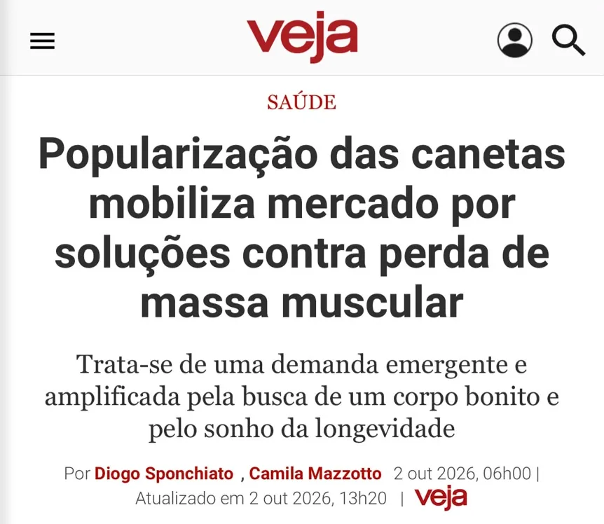
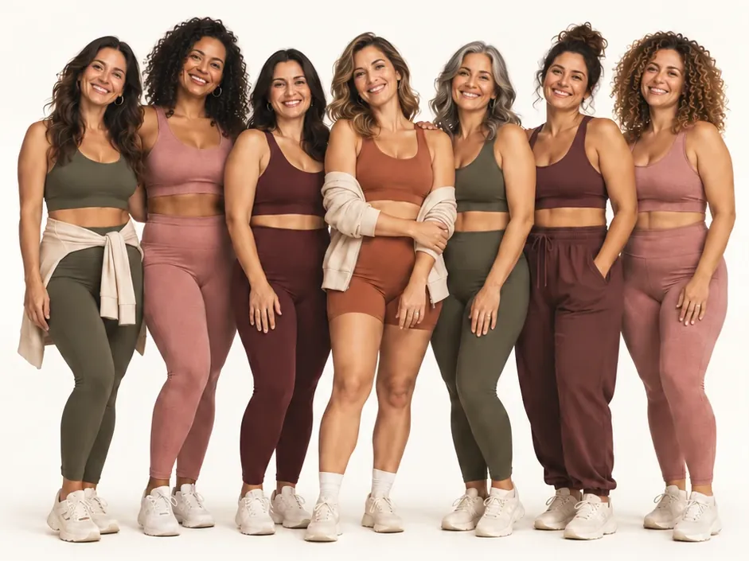

Método além da caneta
A caneta cuida da fome. O prato cuida do resto.
Receitas pequenas, geladas, doces e de lanche, feitas para quem usa caneta emagrecedora e quase não sente fome. O objetivo é simples: fechar a proteína do dia sem forçar comida, para o corpo não perder músculo junto com o peso.
O problema que quase ninguém conta
Comer pouco não é o mesmo que comer certo.
A caneta diminui a fome, e isso ajuda a emagrecer. Mas, com o apetite lá embaixo, a proteína do dia costuma não fechar. E é aí que o ciclo começa:
- A fome someVocê come pouco, belisca ou pula refeições sem perceber.
- A proteína não fechaO que desce fácil (gelado, doce, lanche) quase nunca tem proteína suficiente.
- O músculo vai emboraSem proteína, o corpo tira do próprio músculo junto com a gordura.
- Cansaço e flacidezVem o desânimo, a pele mais mole e a barriga que insiste em ficar.
O que dizem os estudos
Não é falta de força de vontade. É fisiologia.
do peso perdido com semaglutida, num dos maiores estudos com a caneta, não foi gordura: foi massa magra.
Estudo STEP 1, análise de composição corporal. Wilding J. et al., NEJM, 2021.da massa muscular costuma ir embora a cada década depois dos 30 anos, mesmo sem dieta.
Volpi E. et al., Curr Opin Clin Nutr Metab Care, 2004.de proteína por quilo de peso por dia é a faixa de referência para quem está emagrecendo e quer preservar o músculo.
Referência usada no método. Com IMC acima de 30, a conta usa o peso ajustado.
Na imprensa
A perda de músculo com as canetas já virou assunto.
Com a popularização das canetas, cresce a busca por soluções contra a perda de massa muscular. A nossa resposta começa no prato.
Fonte: VEJA, 2 de outubro de 2026. veja.abril.com.br/saude/popularizacao-das-canetas-mobiliza-mercado-por-solucoes-contra-reducao-da-massa-muscular/
O método
Três regras simples, do tamanho do seu apetite.
- 1
Proteína primeiro
Em toda refeição, mesmo pequena, a proteína vem antes. É ela que o corpo usa para preservar o músculo enquanto o peso cai.
- 2
Porção do tamanho do apetite
Nada de prato cheio que não desce. Pequeno e frequente rende mais do que se forçar a comer.
- 3
Prazer no cardápio
Gelado, doce e lanche continuam, na versão que alimenta. Ninguém sustenta um método que tira o que gosta.
O que preparamos
Um material para cada momento difícil.
Cada material resolve uma situação real de quem usa a caneta: o dia sem fome, a vontade de doce, o enjoo, o mercado, o fim de semana.
Para quem é
Feito para quem quer emagrecer sem se perder no caminho.

- Você usa (ou já usou) caneta emagrecedora e quase não sente fome.
- Quer cuidar do músculo e da energia enquanto o peso cai.
- Não quer cortar doce, gelado e lanche: quer a versão que alimenta.
- Precisa de praticidade: receitas rápidas e lista de compras pronta.
Quem somos
Quem já usa
O que as alunas contam.
Depoimentos reais, publicados com autorização. A experiência de cada pessoa é individual.
Perguntas frequentes
Ficou alguma dúvida?
Isso é uma dieta?
Não. É um banco de receitas e um método para organizar o prato quando a fome está baixa. Quantidades individuais, como a sua meta de proteína, você combina com a sua nutricionista.
Preciso mudar alguma coisa na caneta?
Não. Nada aqui mexe no seu tratamento. Dose, troca ou suspensão de medicamento são sempre com o seu médico.
Preciso comprar whey ou suplemento?
Não é obrigatório. Muitas receitas usam ovos, frango, iogurte e queijo. Onde o whey entra, há a versão sem ele.
E se eu já parei de usar a caneta?
O método também serve para o depois: quando o apetite volta, as mesmas regras ajudam a manter a rotina sem voltar aos hábitos de antes.
Como funciona o teste?
São perguntas rápidas sobre a sua rotina com a caneta. No fim, você recebe um resultado com o seu perfil e a proteína que o seu corpo pede. Não pedimos nome nem e-mail.
Teste gratuito
Descubra o que está travando a sua barriga.
Responda algumas perguntas sobre a sua rotina com a caneta e veja o seu resultado na hora.
Fazer o teste agora